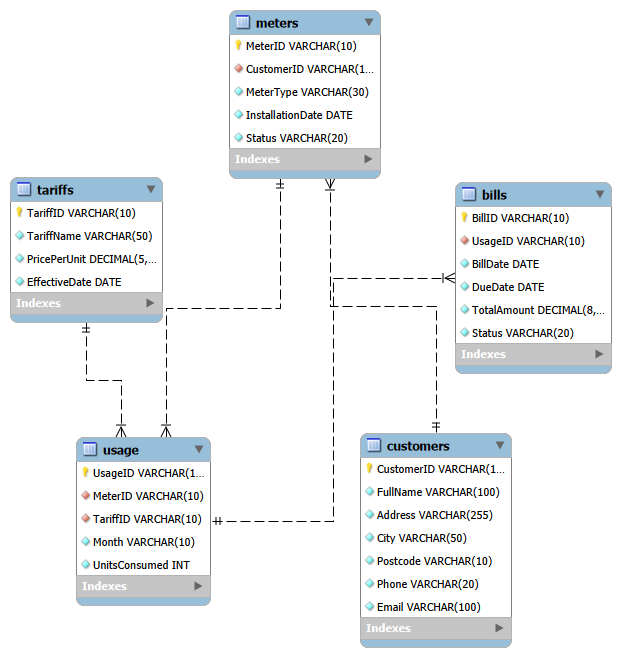
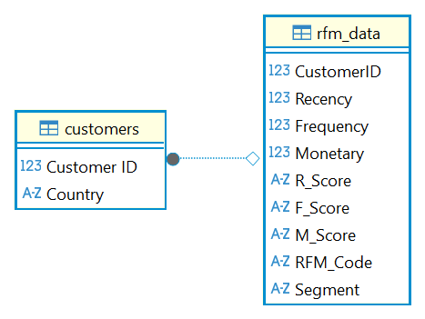
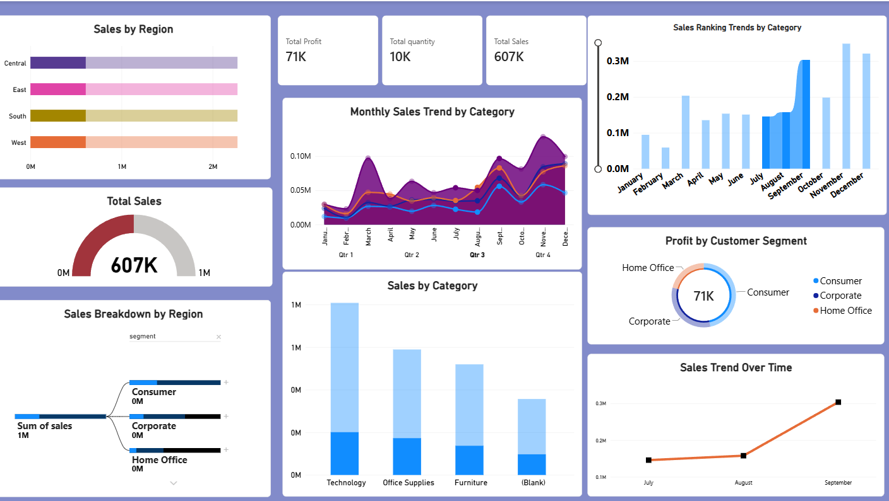
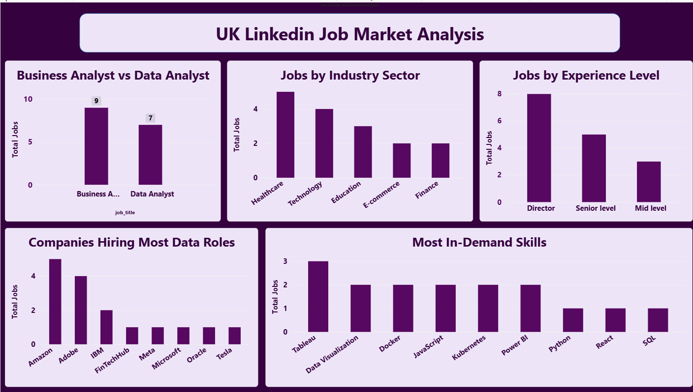

Data Analyst | Freelance & Remote | Seeking Opportunities in the UK
I hold dual Master’s degrees in Mathematics and Data Science. I am working as a freelance Data Analyst and also do remote work, applying my skills with Advanced Excel, Python, SQL, Power BI, HTML, and CSS to turn data into clear, meaningful insights. I am based in Blackburn, UK. Always learning, always growing, and ready for my next opportunity.

Designed and built a complete relational database system for electricity billing operations using MySQL. Created detailed Entity-Relationship (ER) diagrams to plan table structures, relationships, and data integrity. Designed tables for customers, tariffs, usage records, and bills with proper data types, primary keys, and foreign keys. Ensured the system supports accurate billing calculation, efficient data storage, and easy retrieval of customer and payment information.

Performed customer behaviour analysis using Python and Pandas to group customers based on Recency, Frequency, and Monetary value. Cleaned and transformed transaction data, calculated RFM metrics, and segmented customers into meaningful groups such as 'Champions', 'Loyal Customers', and 'At Risk'. Identified high-value customers and actionable insights to support targeted marketing and retention strategies.

Conducted end-to-end sales performance analysis using Excel, SQL, and Power BI. Cleaned large datasets, queried sales trends, regional performance, and category-wise revenue. Designed interactive dashboards using DAX formulas to calculate key metrics, growth rates, and dynamic comparisons. Built visual reports with filters to track sales KPIs, profit margins, and seasonal patterns — delivering clear, actionable insights to support business planning and decision-making.

Analysed UK data analyst job trends using Python data collection and cleaning techniques. Examined salary ranges, in-demand skills, location patterns, and employer requirements across the UK. Identified key technical and soft skills most sought after by recruiters to help job seekers target their learning and applications effectively.
Sales KPIs & regional performance — Power BI
Full retail sales analysis — Power BI · Python
Responsive web design — HTML · CSS